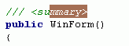

The Delphi 2005 C# Goodies OpenTool is an add-on module for the Borland Delphi 2005 IDE which helps you to perform C# language specific reserved keyword and XML documentation autocompletions inside the Delphi C# editors. Further it actually also includes a quick access WYSIWYG XML to HTML viewer helper and a keycode analyzer helper. The main motivation for this Delphi 2005 related C# OpenTool is, to enhance the productivity of lazy typers by offering some of the missing Delphi 2005 support for C# reserved keywords and XML documentation tags autocompletion.
To install the Delphi 2005 C# Goodies, copy the contents of the distributions \assembly directory into some suitable place on your harddisk, e.g."D:\Programs\dcsgoodies\" or the like. The below table shows which Delphi 2005 C# Goodies distribution files must be all actually installed into one and the same directory.
In the following table, <dcsgoodies> refers as an example for a directory to which to install this distributions files:
| File to copy | Target directory | Description |
| dcsgoodies.dll | <dcsgoodies> |
the main dcsgoodies assembly |
| ShowXmlDocumentation.xsl | <dcsgoodies> |
a XSLT file needed by the XML to HTML docviewer |
| MsdnHelp.css | <dcsgoodies> |
a CSS file needed by the XML to HTML docviewer |
| ShortcutConfig.xml | <dcsgoodies> |
a XML file where you can customize the shortcuts for the Delphi 2005 C# Goddies |
| add_to_registry.bat | <dcsgoodies> |
a help batch file which adds for you the needed dcsgoodies.dll Delphi 2005 registry entry into the Windows registry |
| delete_from_registry.bat | <dcsgoodies> |
a help batch file which deletes the dcsgoodies.dll Delphi 2005 registry entry from the Windows registry for you |
After copying the above files to it's destination directory location, you must execute the add_to_registry.bat file from inside of the directory where you installed this distribution into. This batch file performs an automatic dcsgoodies.dll registry entry setup for Delphi 2005. - Performing a manual registry setup from a DOS shell with reg.exe, would instead look like somehow like this:
> reg add "HKCU\Software\Borland\BDS\1.0\Known IDE Assemblies" /v d:\...\dcsgoodies\dcsgoodies.dll /t REG_SZ /d Goodies
Now you will have to restart Delphi 2005, in order that it can load the dcsgoodies.dll assembly. If all went well, you should now see a new #Goodies top menu entry with three sub menu entries inside Delphi 2005 :
Now the Delphi 2005 C# Goodies is enabled and can be used. See below under the section Usage and Documentation how to make use of it.
The Extras Folder:
For those of you, which possibly may prefer Delphi C# Code Templates, I've also added two custom C#Builder compatible code templates files, one for XML doc tags and one for C# keywords into the Delphi 2005 C# Goodies distribution extras folder. These files are named:
| Code Template File | Purpose |
| xmldoctags.dci | offers C# XML doc tags code templates |
| keywords.dci | offers C# keyword code templates |
You can import these files into Delphi 2005 via it's Code Templates dialog:
After doing so, you can use these Delphi C# XML doc tags and keword code templates by typing in the associated abbreviations (look into the code template files to see the used ones) inside a C# edit view and hitting the Ctrl-J shortcut.
The shortcuts used by the Delphi 2005 C# Goodies are customizable by changing the default value settings inside the ShortcutConfig.xml configuration file. The configuration file should reside inside of the installation directory where you installed the Delphi 2005 C# Goodies into.
The contents of the ShortcutConfig.xml file looks like this:
<Configuration>
<Shortcut Name="ViewDocShortcut" Value="24767" />
<Shortcut Name="DocInsightShortcut" Value="49343" />
<Shortcut Name="KeycodeAnalyzerShortcut" Value="0" />
</Configuration>
The above shown config file contains default keyboard shortcut value entries (Value="xxxxx") for the Delphi 2005 C# Goodies tools. You can change these default assigned values to your prefered ones, with the help of the Keyboard Analyzer in order to determine correct Delphi 2005 C# OTA integer values for specific keyboard shortcuts. - However, keep in mind that there are a lot of shortcuts already in use by Delphi 2005 itself, so you should check twice to not accidently take one of those which are already used internally by Delphi.
The default used keyboard shortcut values for the Delphi 2005 C# Goodies are:
| Tool | Default Shortcut Value | Shortcut name |
| Doc Viewer | 24767 |
Ctrl-Shift-# |
| Doc Insight | 49343 |
Ctrl-Alt-# |
| Keycode Analyzer | 0 |
none |
After making changes to the shortcut values inside the ShortcutConfig.xml file you must restart Delphi in order to use the new associated shortcuts for the Delphi 2005 C# Goodies.
To uninstall the Delphi 2005 C# Goodies use the distributions delete_from_registry.bat file from inside of the installation directory where you installed the Delphi 2005 C# Goodies into. Execute that batch file and afterwards delete your installation directory. Then restart Delphi 2005.
Delphi 2005 C# Goodies adds a sort of WYSIWYG XML documentation preview support for the Delphi 2005 IDE:
Just place the cursor inside a XML documentation section of the C#Builder editor and press Ctrl-Shift-# or use the related #Goodies View Doc menu entry:
NOTE: the above shown Ctrl-Shift-# keyboard shortcut is the default one, which you can change to your prefered one by customizing the ShortcutConfig.xml file! - Note also that the docviewer can only be closed via the windows [x] close button, or by clicking outside of the docviewer window with the mouse.
The Delphi 2005 C# Goodies contain also a little Keycode Analyzer tool for the Delphi 2005 IDE, which also helps to inspect the Delphi OTA related keycodes beside the usual ones.
The Keycode Analyzer can be accessed from the #Goodies menu:
One of the main Delphi 2005 C# Goodies tasks is, to add some autocompletion support for C# XML documentation tags and language keywords. Typing the first characters of a C# keyword or XML documentation and afterwards pressing the default setup Ctrl-Alt-# shortcut, autocompletes relevant words or strings, where the completed portion of a matched relevant word will remain highlighted for overtyping. When the matched completion is the desired one, just use the cursor right or end key to accept the completed portion of the word. In case it's not the right one, type on further characters of the word to match and access the autocompletion mechanism again.


NOTE: the above shown Ctrl-Alt-# keyboard shortcut is the default one, which you can change to your prefered one by customizing the ShortcutConfig.xml file!
The following tables show the C# keywords and XML documentation tags, which have been added to the Delphi 2005 C# Goodies code insight like mechanism.
Table of supported C# autocompletion keywords:
Note: These words are reserved--you cannot use any of these words as names in your C# programs.
abstract | event | new | struct |
as | explicit | null | switch |
base | extern | object | this |
bool | false | operator | throw |
break | finally | out | true |
byte | fixed | override | try |
case | float | params | typeof |
catch | for | private | uint |
char | foreach | protected | ulong |
checked | goto | public | unchecked |
class | if | readonly | unsafe |
const | implicit | ref | ushort |
continue | in | return | using |
decimal | int | sbyte | virtual |
default | interface | sealed | volatile |
delegate | internal | short | void |
do | is | sizeof | while |
double | lock | stackalloc | else |
long | static | enum | namespace |
string |
Table of supported XML documentation autocompletion tags:
| <summary> | <value> | <remarks> | <returns> |
| </summary> | </value> | </remarks> | </returns> |
| <summary>xxx</summary> | <value>xxx</value> | <remarks>xxx</remarks> | <returns>xxx</returns> |
| <para> | <param name="xxx"> | <exception cref="xxx"> | <see cref="xxx"/> |
| </para> | </param> | </exception> | <seealso cref="xxx"/> |
| <para>xxx</para> | <param name="xxx">xxx</param> | <exception cref="xxx">xxx</exception> | <permission cref="xxx"> |
| <code> | <paramref name="xxx"/> | <example> | </permission> |
| </code> | <c> | </example> | <permission cref="xxx">xxx</permission> |
| <code>xxx</code> | </c> | <example>xxx</example> | <list type="bullet" | "number" | "table"> |
| <listheader> | <c>xxx</c> | <item> | </list> |
| </listheader> | <term> | </item> | <list>xxx</list> |
| <listheader>xxx</listheader> | </term> | <item>xxx</item> | |
/// |
<term>xxx</term> | /> |
Here are some typing/expanding examples, which assume/use the default setup Ctrl-# keyboard shortcut, in order for you to try them out inside the Delphi 2005 C# editor:
typing in cl| <Ctrl-Alt-#> will result to cl[ass]typing in inte| <Ctrl-Alt-#> will result to inte[rface]typing in pro| <Ctrl-Alt-#> will result to pro[tected]
The Delphi 2005 C# Goodies OpenTools has been tested with a versions of Delphi 2005 Architect and the .NET framework v.1.1 running under Windows 2000 with SP4.
If you have problems with the installation of the Delphi 2005 C# Goodies or support questions, you are welcome to send an e-mail (see the below e-mail address) to
For any other questions regarding the operation of Delphi 2005 and C#Builder, or any general C# questions you are encouraged to visit the appropriate newsgroup on the Borland news server. There you will find many good people who are willing to help others with technical problems. You will likely find KyrSoft's author of this program as well there.
Information on the Borland developer newsgroups is available at:
http://www.borland.com/newsgroups/.
If you believe that you have encountered a bug in the operation of the Delphi 2005 C# Goodies or have a suggestion for an improvement that will be of use to many others, please send me e-mail at: